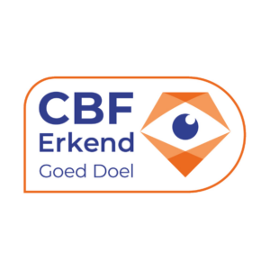
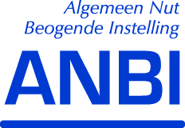

Doneer
Hoe kan jij helpen?
Steun ons met jouw donatie!
Ieder mens heeft recht op juridische bijstand en toegang tot onderwijs, gezondheidszorg en onderdak. Oók als je je land bent ontvlucht en (nog) geen geldige verblijfsvergunning hebt. Want iedereen in Nederland verdient een menswaardig bestaan.
Kom jij ook in actie
 Met jouw donatie
- Strijden we voor de structurele verbetering van de positie van mensen zonder verblijfsvergunning met lobby en campagne.
- Ondersteunen wij mensen zonder verblijfsvergunning zodat ook zij naar de dokter kunnen, een opleiding kunnen volgen en een thuis hebben.
Liever periodiek schenken met belastingvoordeel?
Voor wie het ASKV structureel wil steunen, bestaat er ook een periodieke schenkingsovereenkomst. Deze ga je aan voor minimaal vijf jaar, waarbij je een substantieel deel van je gift terugkrijgt van de belastingdienst.
Het enige wat je hoeft te doen is de overeenkomst downloaden, invullen en in een envelop naar onderstaand adres sturen. Wij regelen verder alles en je ontvangt uiteraard een bevestiging.
Stichting ASKV
Chris Lebeaustraat 4
1062 DC Amsterdam
Wil je meer informatie over periodiek schenken? Kijk dan op de website van de Belastingdienst of neem contact op met ons via info@askv.nl of 020-6272408.
Ons ANBI- oftewel RSIN-nummer voor een schenking is: 007988680. Je kunt onze ANBI- status hier opzoeken. Vul in het zoek scherm ‘Steunpunt Vluchtelingen‘ in (officieel heten we A.S.K.V. \ Steunpunt Vluchtelingen).
* Bereken met de Schenkcalculator jouw fiscaal voordeel of bekijk wat je extra kunt schenken dankzij het belastingvoordeel. Voor het ASKV biedt een schenkingsovereenkomt zekerheid over (toekomstige) inkomsten.
Lees hier onze privacyverklaring.